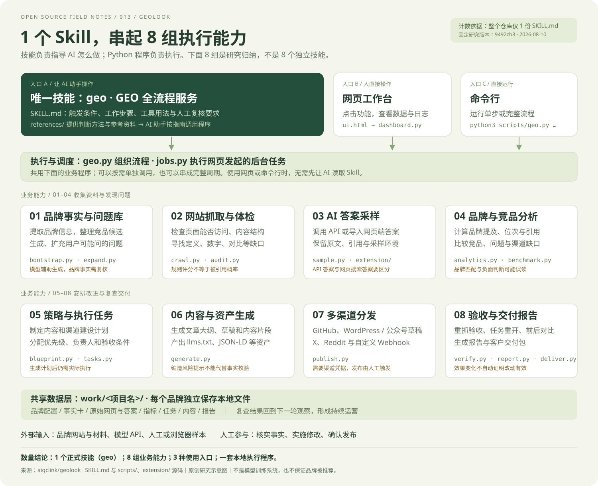

办公推荐问题中，山野缺席
样本组 A 与 B 的基线答案都提到了其他店铺。引用来源中出现城市指南与办公地点清单。
返回答案样本 ↗基线轮 · 10 条未点名答案 + 2 条品牌验证答案
点击问题，看原始答案和统计依据。
“AI 没提到我”是观察结果。
“因为官网缺少介绍”是可能原因。
二者不能直接画等号。
样本组 A 与 B 的基线答案都提到了其他店铺。引用来源中出现城市指南与办公地点清单。
返回答案样本 ↗检查官网与第三方资料是否说明插座、Wi-Fi、噪声与久坐规则。需要真实证据，不能为了曝光编造。
把线索转成待办 ↗选择一层，看看它检查什么，以及结论的边界。
分数是整理线索的方法，真实答案才是外部表现。
检查网页的技术与内容条件。上游六项权重如下。
按规则加分，不等于被 AI 引用的概率。上游综合提及率、官网引用份额、渠道覆盖、内容承接和事实一致性。缺少数据时会重新分配权重。
事实一致性依赖人工核对；负面词命中只是待复核线索。
体验勾选任务。任务进度与曝光数据分别记录。
编辑文字，观察信息块检测的变化。这是教学规则，不是上游完整评分。
网站修改可以重新抓取验收。
推荐表现需要新一轮答案采样。
订单增长还需要业务数据。
数字变化来自预置复查答案，与任务勾选无关。
| 未点名问题 | 基线提及 | 复查提及 | 观察结果 |
|---|
重新检查页面是否有正文、是否增加结构化数据、抓取限制是否解除。上游会将再次不达标的已完成任务重新打开。
模型、搜索索引和竞争对手都可能变化。需要多轮采样、对照问题和事件记录，才能提高判断把握。
唯一技能叫 geo。8 组是能力归纳，Python 模块和浏览器扩展不另算技能。

点图可打开原始矢量图并放大。计数依据：研究版本 9492cb3 的完整文件树只有根目录 SKILL.md。
GeoLook 把这些工作串在一个界面里。它不会改变模型参数，也无法保证某个平台推荐某个品牌。
点击模块查看实现、产物和适用边界。
SaaS、消费品牌或服务商，观察推荐、价格、替代等问题。
结合用户问题与引用来源，补充有证据的介绍、对比与场景说明。
交付诊断、任务清单与阶段报告，持续跟踪实施情况。
以下是二次开发建议，并非已经实现的功能。
上游：aigclink/geolook · MIT · 9492cb3 ↗
原版为 Python 本地工作台，数据保存在本机文件中。需 Python 3.9+ 与 requests、beautifulsoup4、lxml；Windows 需 WSL（上游使用 fcntl）。在克隆的上游目录运行：
python3 scripts/geo.py ui
API 密钥用于真实采样和 AI 生成；无密钥也可体检、管理任务和导入人工样本。多数 API 入口默认不联网，不能代表同名网页产品的搜索回答。
本页是独立编写的静态教学展示，不是原版 GeoLook 界面。未接入真实模型、爬虫和发布渠道；所有品牌、答案、域名、问题诊断与效果数字均为教学模拟。资料基于源码阅读，尚未完成上游端到端部署实测。